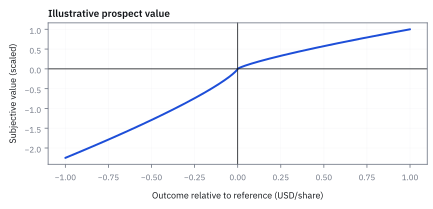
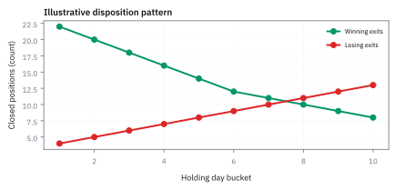

24.1 Market Efficiency, Limits, and Behavioural Roots
ราคาที่ผิดอยู่ได้ เพราะการแก้มันมีต้นทุนและความเสี่ยง และตัวเลขที่เห็นมีความหมายก็ต่อเมื่อรู้ว่ามันผ่านกระบวนการอะไรมา
บริษัทหนึ่งออกหุ้นสองชั้น เรียกว่าชั้น A กับชั้น B ทั้งสองชั้นได้เงินปันผลเท่ากันทุกดอลลาร์ จึงควรมีราคาเท่ากัน แต่วันนี้บนจอ ชั้น B แพงกว่าชั้น A อยู่ 80 เซนต์ เทรดเดอร์คนหนึ่งเห็นแล้วบอกว่า “นี่คือเงินฟรี” แผนของเขาคือซื้อตัวถูก ขายตัวแพง แล้วรอให้ราคาสองชั้นกลับมาเท่ากัน
การขายตัวแพงทำด้วยการ short คือยืมหุ้น B จากคนอื่นมาขายวันนี้ แล้วค่อยซื้อคืนไปคืนเจ้าของทีหลัง ถ้าวันซื้อคืน ราคา B ลงมาใกล้ราคา A ส่วนต่างที่หายไปคือกำไรของเขา
ของที่รู้ (ตัวเลขสมมติ):
- ซื้อหุ้นชั้น A ที่ \$50.00 และ short หุ้นชั้น B ที่ \$50.80 ส่วนต่างวันเปิดดีลจึงเป็น $50.80-50.00=\$0.80$ ต่อหุ้น
- ทำอย่างละ 10,000 หุ้น “เงินฟรี” บนจอจึงเป็น $10{,}000\times0.80=\$8{,}000$
- ค่าเข้าออก \$0.12 ต่อหุ้น คือค่าใช้จ่ายในการซื้อขาย เช่นค่านายหน้า ทั้งตอนเปิดและตอนปิดดีล รวมทั้งสองขา
- ค่าถือ \$0.020 ต่อหุ้นต่อวัน คือค่ายืมหุ้น B บวกดอกเบี้ยของเงินที่ต้องจมไว้ในดีล
- หลักประกัน คือเงินที่โบรกเกอร์ให้วางไว้ เผื่อเราขาดทุนแล้วไม่จ่าย สมมติเป็น 20% ของมูลค่าขาซื้อ คือ $0.2\times10{,}000\times\$50=\$100{,}000$
ผ่านไป 10 วัน ส่วนต่างหดจาก \$0.80 เหลือ \$0.35 แต่ยังไม่ถึงศูนย์ เขาปิดดีลวันนั้น คำถามแรก เขาเหลือเงินจริงเท่าไร คำถามที่สอง ถ้าส่วนต่างไม่หด แต่ถ่างออกเป็น \$3.00 ก่อน จะเกิดอะไรขึ้น?
ลองตอบก่อนเปิดเฉลย
เหลือ \$1,300 ไม่ใช่ \$8,000 เพราะต้องหักสามก้อน
- ค่าเข้าออก $10{,}000\times0.12=\$1{,}200$
- ค่าถือ 10 วัน $10{,}000\times0.020\times10=\$2{,}000$
- ส่วนต่างที่ยังไม่หด ซึ่งเราไม่ได้เก็บ $10{,}000\times0.35=\$3{,}500$
เงินที่เหลือคิดเป็น 1.3% ของหลักประกัน ในสิบวัน
ถ้าส่วนต่างถ่างเป็น \$3.00 ก่อน บัญชีต้องบันทึกขาดทุนบนกระดาษ คือขาดทุนที่คิดจากราคาวันนั้น แม้ยังไม่ได้ปิดดีล ขาดทุนนี้เท่ากับ $10{,}000\times(3.00-0.80)=\$22{,}000$ หรือ $22{,}000/100{,}000=22\%$ ของหลักประกัน ทั้งที่ความคิดเดิมยังไม่ผิด
นี่คือเหตุผลที่ราคาผิดอยู่ได้ การแก้ราคาที่ผิดไม่ใช่เงินฟรี มันมีต้นทุน และมีความเสี่ยงระหว่างทาง
ภาพรวมก่อนลงสูตร
เทรดเดอร์ในโจทย์ใช้เหตุผลข้อเดียวกับที่ทั้งเล่มใช้มาตลอด ชื่อว่า no-arbitrage แปลตรง ๆ ว่า “ไม่มีเงินฟรี” ของสองชิ้นที่จ่ายเงินให้เราเหมือนกันทุกครั้ง ต้องมีราคาเท่ากัน ถ้าไม่เท่า จะมีคนซื้อตัวถูกและขายตัวแพง จนส่วนต่างหายไปเอง
แต่เหตุผลนี้ยืนบนสมมติฐานสี่ข้อ ที่เรามักไม่พูดออกมา
- ตลาดมีคนซื้อขายมากพอ จะซื้อหรือขายเมื่อไรก็ได้
- ทุกคนเห็นราคาเดียวกัน
- มีคนแข่งกันเก็บเงินฟรี ราคาที่เพี้ยนจึงถูกดันกลับ
- กู้เงินและฝากเงินได้ที่ดอกเบี้ยเท่ากัน
ถ้าข้อใดข้อหนึ่งไม่จริง ราคาที่ผิดก็อยู่ได้นาน เรื่องนี้เรียกว่า limits to arbitrage คือขีดจำกัดของการเก็บเงินฟรี ผลที่ตามมาคือ คำว่าตลาด “มีประสิทธิภาพ” ต้องนิยามใหม่ให้ตรง มันไม่ได้แปลว่าราคาถูกต้องทุกวินาที มันแปลว่ากำไรที่ทำซ้ำได้ หลังหักค่าชดเชยความเสี่ยงและต้นทุนแล้ว หายากมาก
อีกครึ่งของหน้าคือเรื่องคน คนผิดได้สองแบบ แบบแรกคือตัดสินใจเอียง เช่นรีบขายหุ้นที่กำไร แต่ถือหุ้นที่ขาดทุนไว้นาน prospect theory อธิบายว่าทำไม แบบที่สองคืออ่านตัวเลขผิด เช่นเห็นผู้จัดการกองทุนที่ชนะตลาด 9 ปีจาก 10 ปี แล้วเชื่อว่าเขามีฝีมือ โดยไม่ถามว่าเขาถูกคัดมาจากกี่คน หรือเห็นกองทุนรายงานผลตอบแทนเฉลี่ย 5% ต่อปี แล้วไม่ถามว่าเงินส่วนใหญ่ลงไปตอนไหน (ตัวเลขสองตัวนี้มาจากตัวอย่างในขั้นที่ 10 และขั้นที่ 11) ความผิดแบบที่สองนี้คือสิ่งที่ quant ต้องระวังทุกวัน quant คือคนที่ใช้คณิตศาสตร์และข้อมูลสร้างกลยุทธ์การลงทุน
หน้านี้เดินตามลำดับนี้ เริ่มจากทำบัญชีของดีลในโจทย์ ดูว่า no-arbitrage พังตรงไหน นิยามคำว่า “มีประสิทธิภาพ” ให้ทดสอบได้ แล้วไปดูความผิดของคนทั้งสองแบบ รูปด้านล่างคือหัวใจของ limits to arbitrage ดีลเดียวกัน แต่ส่วนต่างเดินได้สองทาง
รูป — ความคิดถูก แต่เงินหมดก่อน
แกนนอนคือจำนวนวันหลังเปิดดีล แกนตั้งคือส่วนต่างราคา B ลบ A ต่อหุ้น เส้นทางทั้งสองเป็นเส้นทางสมมติ จุดดำคือวันเปิดดีล ส่วนต่าง \$0.80 เส้นน้ำเงินคือกรณีในโจทย์ ส่วนต่างหดเหลือ \$0.35 ในวันที่ 10 และปิดดีลได้ \$1,300 เส้นแดงคือกรณีที่ส่วนต่างถ่างออกก่อน
เส้นประส้มคือเพดานขาดทุนที่ฝ่ายความเสี่ยงยอมได้ สมมติว่าเป็น 20% ของหลักประกัน คือ $0.2\times100{,}000=\$20{,}000$ ขาดทุนถึงเพดานเมื่อส่วนต่างถ่างไป $20{,}000/10{,}000=\$2.00$ ต่อหุ้น คือส่วนต่าง $0.80+2.00=\$2.80$ เส้นแดงแตะเส้นประในวันที่ 11 (กากบาท) ดีลจึงถูกบังคับปิดพร้อมขาดทุน
ส่วนจางของเส้นแดงคือสิ่งที่เกิดหลังจากนั้น ส่วนต่างขึ้นไปเกือบ \$3.00 แล้วค่อยหดจนเป็นศูนย์ในวันที่ 40 ความคิดของเทรดเดอร์ถูก แต่เงินหมดก่อน
ศัพท์ที่ใช้ในหัวข้อนี้
- Short
- ยืมหุ้นจากคนอื่นมาขายวันนี้ แล้วซื้อคืนไปคืนเจ้าของทีหลัง ได้กำไรถ้าราคาลง ขาดทุนถ้าราคาขึ้น และต้องจ่ายค่ายืมระหว่างที่ยืมอยู่
- หลักประกัน (margin)
- เงินที่โบรกเกอร์ให้วางไว้ เผื่อเราขาดทุนแล้วไม่จ่าย ถ้าดีลขาดทุน เงินก้อนนี้ลดลง และโบรกเกอร์จะเรียกให้เติมเงิน
- Market efficiency (EMH: efficient market hypothesis)
- สมมติฐานว่าราคาวันนี้รวมข้อมูลที่ทุกคนหาได้ไว้แล้ว ใครใช้ข้อมูลนั้นเทรด ก็ทำกำไรเกินค่าชดเชยความเสี่ยงและต้นทุนซ้ำ ๆ ไม่ได้ ทีมวิจัยใช้มันเป็นจุดตั้งต้น สัญญาณเทรดใหม่ต้องเอาชนะสมมติฐานนี้ให้ได้ก่อน
- Arbitrage และ limits to arbitrage
- arbitrage คือซื้อของถูกและขายของแพงพร้อมกัน โดยของสองชิ้นจ่ายเงินให้เหมือนกัน ไม่ต้องใช้เงินตัวเอง และไม่มีทางขาดทุน limits to arbitrage คือสิ่งที่ขวางไม่ให้คนแก้ราคาได้ทันที ได้แก่ ต้นทุนการซื้อขาย ค่ายืมหุ้น เงินทุนที่มีจำกัด และความเสี่ยงที่ส่วนต่างจะถ่างออกก่อนหด
- Beta
- ความไวต่อตลาด ถ้า beta เท่ากับ 1.1 แปลว่าตลาดขึ้น 1% กลยุทธ์ขึ้นตามเฉลี่ย 1.1% ส่วนนี้ใครถือตลาดเฉย ๆ ก็ได้ ไม่ใช่ฝีมือ
- Alpha
- ผลตอบแทนที่เหลือ หลังหักส่วนที่ได้มาเพราะเกาะตลาด และหักต้นทุนแล้ว ใช้แยกฝีมือหรือสัญญาณออกจากผลตอบแทนที่ใครถือตลาดเฉย ๆ ก็ได้
- Joint hypothesis problem
- จะทดสอบว่าตลาดมีประสิทธิภาพ ต้องมีแบบจำลองบอกก่อนเสมอว่าผลตอบแทน “ควร” เป็นเท่าไร ถ้าผลทดสอบออกมาไม่ตรง เราแยกไม่ได้ว่าตลาดผิด หรือแบบจำลองผิด
- Prospect theory และ disposition effect
- prospect theory คือแบบจำลองของ Kahneman และ Tversky ว่าคนให้ค่ากับผลลัพธ์อย่างไร คนไม่ได้ดูว่ามีเงินรวมเท่าไร แต่ดูว่ากำไรหรือขาดทุนเท่าไร เทียบกับจุดอ้างอิง เช่นราคาที่ซื้อมา และการขาดทุนทำให้เจ็บมากกว่าที่กำไรขนาดเท่ากันทำให้ดีใจ disposition effect คือนิสัยรีบขายหุ้นที่กำไร แต่ถือหุ้นที่ขาดทุนไว้นานเกินไป
- Survivorship bias
- ความเอียงที่เกิดเพราะเห็นแต่ตัวที่รอด เช่นนับแต่กองทุนที่ยังเปิดอยู่ หรือหุ้นที่ยังอยู่ในดัชนีวันนี้ ตัวที่ล้มหายไปไม่ถูกนับ ผลย้อนหลังจึงดูดีกว่าความจริง
- Data snooping
- ใช้ข้อมูลชุดเดียวกันทั้งหากลยุทธ์และทดสอบกลยุทธ์ หรือปล่อยให้ข้อมูลช่วงทดสอบรั่วเข้าไปตอนสร้างกลยุทธ์ ผลทดสอบจึงดีเกินจริง
สัญลักษณ์และหน่วย
| สัญลักษณ์ | ความหมาย | หน่วย |
|---|---|---|
| $Q,\ d$ | จำนวนหุ้นแต่ละขา และส่วนต่างราคาต่อหุ้นวันเปิดดีล | หุ้น, \$ ต่อหุ้น |
| $c,\ f,\ T$ | ค่าเข้าออกต่อหุ้น ค่าถือต่อหุ้นต่อวัน และจำนวนวันที่ถือ | \$ ต่อหุ้น, \$ ต่อหุ้นต่อวัน, วัน |
| $d_{\text{left}},\ \Pi$ | ส่วนต่างที่ยังไม่หดตอนปิดดีล และเงินที่เหลือจริงจากดีล | \$ ต่อหุ้น, \$ |
| $p,\ A,\ r$ | ราคาสัญญาวันนี้ เงินที่สัญญาจ่ายในอีกหนึ่งปี และดอกเบี้ยต่อปี | \$, \$, ต่อปี |
| $R,\ R^M,\ \beta$ | ผลตอบแทนของกลยุทธ์ ผลตอบแทนของตลาด และความไวต่อตลาด | สัดส่วนต่อช่วง, ไม่มีหน่วย |
| $\alpha$ | ผลตอบแทนที่เหลือ หลังหักส่วนที่ได้เพราะเกาะตลาดและหักต้นทุน | สัดส่วนต่อช่วง |
| $v(x),\ \eta,\ \lambda$ | ค่าในใจของผลลัพธ์ $x$ ตัวคุมความโค้ง และตัวคูณความเจ็บของการขาดทุน | หน่วยค่าในใจ, ไม่มีหน่วย |
| $w_k,\ \ell_k$ | จำนวนรายการที่ปิดกำไร และที่ปิดขาดทุน หลังถือ $k$ วัน | รายการ |
| $X,\ M$ | จำนวนปีที่ชนะตลาดใน 10 ปี และจำนวนผู้จัดการที่ถูกนำมาเลือก | ปี, คน |
ขั้นที่ 1 — บัญชีของดีลที่ดูเหมือนเงินฟรี
ก่อนคุยเรื่องทฤษฎี ทำบัญชีของดีลในโจทย์ให้ครบก่อน ว่าเงิน \$8,000 บนจอหายไปไหนบ้าง
โจทย์ให้อะไรมาบ้าง:
- จำนวนหุ้นแต่ละขา $Q=10{,}000$ หุ้น
- ส่วนต่างวันเปิดดีล $d=\$0.80$ ต่อหุ้น
- ค่าเข้าออก $c=\$0.12$ ต่อหุ้น
- ค่าถือ $f=\$0.020$ ต่อหุ้นต่อวัน
- จำนวนวันที่ถือ $T=10$ วัน
- ส่วนต่างที่ยังไม่หดตอนปิดดีล $d_{\text{left}}=\$0.35$ ต่อหุ้น
- หลักประกัน \$100,000 (คำนวณไว้ในโจทย์ด้านบน)
ถ้าส่วนต่างหดจนเป็นศูนย์ เราจะได้ $d$ ต่อหุ้น หักค่าเข้าออก $c$ และค่าถือ $f$ ทุกวันรวม $T$ วัน แต่ตอนปิดดีล ส่วนต่างยังเหลือ $d_{\text{left}}$ ส่วนนี้ยังไม่หด เราจึงไม่ได้มัน ต้องหักออกด้วย เรียกเงินที่เหลือจริงว่า $\Pi$
กำไรของดีลแบบนี้ไม่ใช่ส่วนต่างบนจอ มันคือส่วนต่างที่หดไปจริง ลบต้นทุนทั้งหมด ในโจทย์ส่วนต่างหดไปแค่ $0.80-0.35=\$0.45$ ต่อหุ้น ไม่ใช่ \$0.80 ทั้งก้อน
อีกเรื่องที่ต้องเห็นคือค่าถือโตตามวัน ทุกวันที่ส่วนต่างยังไม่หด ดีลเสีย $Qf=10{,}000\times0.020=\$200$ ยิ่งรอนาน เงินฟรียิ่งหด
คำตอบ: เหลือ \$1,300 หรือ 1.3% ของหลักประกันในสิบวัน จาก \$8,000 บนจอ เงินหายไปกับค่าเข้าออก \$1,200 ค่าถือ \$2,000 และส่วนต่างที่ยังค้าง \$3,500
ตรวจเองใน 10 วินาที: $8{,}000-1{,}200-2{,}000-3{,}500=1{,}300$ หรือคิดจากส่วนที่หดจริง $10{,}000\times(0.45-0.12-0.20)=10{,}000\times0.13=1{,}300$ ได้เท่ากัน
ขั้นที่ 2 — no-arbitrage ยืนบนสมมติฐานอะไร
เทรดเดอร์เรียกส่วนต่างว่า “เงินฟรี” เพราะใช้เหตุผล no-arbitrage เราจึงต้องดูว่าเหตุผลนี้ต้องพึ่งอะไรบ้าง หุ้นสองชั้นมีรายละเอียดมากเกินไป จึงใช้สัญญาที่ง่ายที่สุดแทน
- สัญญาจ่ายเงิน $A=\$100$ ในอีกหนึ่งปีแน่นอน ไม่มีความเสี่ยง (สมมติ)
- ราคาวันนี้ของสัญญาคือ $p$ ซึ่งเป็นสิ่งที่เราอยากหา
- ดอกเบี้ยต่อปีคือ $r=5\%$ ใช้ได้ทั้งกู้และฝาก (สมมติ)
กติกาที่ใช้มีข้อเดียว ชื่อ weak no-arbitrage ถ้าพอร์ตหนึ่งไม่มีทางทำให้เราต้องจ่ายเงินในอนาคต ต้นทุนตั้งพอร์ตนี้วันนี้ต้องไม่ติดลบ เพราะถ้าติดลบ แปลว่ามีคนจ่ายเงินให้เราถือพอร์ตนี้วันนี้ แล้วเราไม่ต้องจ่ายอะไรคืนเลย นั่นคือเงินฟรี
สร้างสองพอร์ตที่อีกหนึ่งปีจ่ายศูนย์พอดี
- พอร์ต $z_1$ ซื้อสัญญา (จ่าย $p$) และกู้เงิน $A/(1+r)$ วันนี้ อีกหนึ่งปีหนี้โตเป็น $A$ พอดี เอาเงิน $A$ จากสัญญามาคืนหนี้ เหลือศูนย์
- พอร์ต $z_2$ ทำกลับด้าน ขายสัญญา (ได้ $p$) แล้วฝากเงิน $A/(1+r)$ อีกหนึ่งปีเงินฝากโตเป็น $A$ พอดี เอาไปจ่ายให้คนซื้อสัญญา เหลือศูนย์
ใช้กติกากับทั้งสองพอร์ต ต้นทุนวันนี้ของแต่ละพอร์ตต้องไม่ติดลบ
อสมการแรกบอกว่า $p$ ต้องไม่ต่ำกว่า $A/(1+r)$ อสมการที่สองบอกว่า $p$ ต้องไม่สูงกว่า $A/(1+r)$ สองข้อบีบเข้าหากันจนเหลือค่าเดียว \$95.24 ถ้าราคาต่ำกว่านี้ ใครก็ตั้งพอร์ต $z_1$ แล้วได้เงินวันนี้ฟรี ถ้าสูงกว่านี้ ใครก็ตั้งพอร์ต $z_2$
แต่ดูว่าเราใช้อะไรไปบ้าง เราสมมติว่ากู้และฝากได้ไม่จำกัดที่ดอกเบี้ยเท่ากัน ตลาดมีคนซื้อขายพอ ทุกคนเห็นราคา และมีคนแข่งกันดันราคาที่เพี้ยนกลับ
คราวนี้ถอดสมมติฐานออกข้อเดียว ให้กู้ต้องจ่าย 6% แต่ฝากได้แค่ 4% พอร์ต $z_1$ ต้องกู้ จึงใช้ 6% พอร์ต $z_2$ ต้องฝาก จึงใช้ 4% แต่ละอสมการจึงมีตัวหารคนละตัว
ราคาเดียวกลายเป็นช่วงกว้าง \$1.81 ราคาใดในช่วงนี้ ไม่มีใครทำเงินฟรีได้ ลองราคาตัวอย่าง $p=\$95.80$ พอร์ตแรกมีต้นทุน $95.80-94.34=1.46$ พอร์ตที่สองมีต้นทุน $96.15-95.80=0.35$ ทั้งคู่ไม่ติดลบ จึงไม่มีเงินฟรี และไม่มีแรงไหนดึงราคากลับมาที่ \$95.24
หุ้นสองชั้นในโจทย์ก็เหมือนกัน ขา short ต้องเสียค่ายืมหุ้น B ต้องวางหลักประกัน และต้องรอเวลา แรงเสียดทานแต่ละอย่างทำให้ช่วงกว้างขึ้น ส่วนต่างที่ยังอยู่ในช่วงจึงไม่ใช่เงินฟรี
รูป — แรงเสียดทานเปลี่ยนราคาเดียวเป็นช่วง
ขั้นที่ 3 — ถ้าส่วนต่างถ่างก่อน: ทำไมคนแก้ราคาอาจเจ๊งก่อน
บัญชีในขั้นที่ 1 สมมติว่าส่วนต่างหดทันใน 10 วัน แต่ไม่มีอะไรบังคับให้มันหด ถ้ามีคนเทขายหุ้นชั้น A หนัก ๆ ราคา A จะตก และส่วนต่างอาจถ่างเป็น \$3.00 ก่อน
ระหว่างที่ดีลยังเปิดอยู่ บัญชีต้องคิดกำไรขาดทุนจากราคาตลาดทุกวัน เรียกว่า mark-to-market (MTM) คือถามว่า ถ้าปิดดีลวันนี้จะได้หรือเสียเท่าไร แม้ยังไม่ได้ปิดจริง ส่วนต่างที่ถ่างจาก \$0.80 เป็น \$3.00 ทำให้เสียต่อหุ้น $3.00-0.80=\$2.20$ บนหุ้น $Q$ หุ้น
ดีลขาดทุน 22% ของหลักประกัน ทั้งที่ความคิดเดิมยังถูก หุ้นสองชั้นยังจ่ายปันผลเท่ากันทุกดอลลาร์ แล้วสองเรื่องจะตามมา เรื่องแรก โบรกเกอร์เรียกให้เติมหลักประกัน เพราะเงินที่วางไว้ลดลง เรื่องที่สอง นักลงทุนของกองทุนเห็นขาดทุน แล้วอาจถอนเงิน
ถ้าหาเงินมาเติมไม่ได้ ก็ต้องปิดดีลตอนนั้น ขาดทุนบนกระดาษจึงกลายเป็นขาดทุนจริง เหมือนเส้นแดงในรูปแรก Shleifer และ Vishny (1997) เรียกเรื่องนี้ว่า limits to arbitrage คนที่แก้ราคามีเงินจำกัด และเงินหายไปตอนที่ราคาผิดมากที่สุด ซึ่งเป็นตอนที่ควรเพิ่มดีลที่สุด
ผลคือราคาที่ผิดอยู่ได้นาน ไม่ใช่เพราะไม่มีใครเห็น แต่เพราะการแก้มันต้องใช้เงินที่ทนขาดทุนระหว่างทางได้ ตัวอย่างจริงคือหุ้น Royal Dutch กับหุ้น Shell สองบริษัทนี้รวมกิจการกันโดยแบ่งกำไรตามสัดส่วนคงที่ 60 ต่อ 40 มูลค่าตลาดของหุ้นสองตัวจึงควรเป็น 60 ต่อ 40 ตลอด แต่ในความจริง มูลค่าทั้งสองคลาดจากสัดส่วนนี้หลายเปอร์เซ็นต์ นานหลายปี (Froot และ Dabora, 1999)
ขั้นที่ 4 — “มีประสิทธิภาพ” แปลว่าอะไร ในรูปที่ทดสอบได้
คำว่า “ตลาดมีประสิทธิภาพ” ฟังดูดี แต่ทดสอบไม่ได้จนกว่าจะเขียนเป็นสมการ Eugene Fama (1970) เขียนมันเป็นเรื่องของผลตอบแทนส่วนเกิน เอาผลตอบแทนของกลยุทธ์มาหักสองอย่าง อย่างแรกคือส่วนที่ได้มาเพราะเกาะตลาด อย่างที่สองคือต้นทุน ส่วนที่เหลือต้องเดาล่วงหน้าไม่ได้ ด้วยข้อมูลที่มีวันนี้
สัญลักษณ์ที่ใช้
- $R_{t+1}$ ผลตอบแทนของกลยุทธ์ในช่วงถัดไป คือจากเวลา $t$ ถึง $t+1$
- $R^M_{t+1}$ ผลตอบแทนของตลาดทั้งตลาด ในช่วงเดียวกัน
- $\beta$ ความไวต่อตลาด ถ้า $\beta=1.10$ ตลาดขึ้น 1% กลยุทธ์ขึ้นตามเฉลี่ย 1.1% (วิธีหา $\beta$ อยู่ในหน้า CAPM)
- $c_{t+1}$ ต้นทุนการเทรดในช่วงนั้น
- $I_t$ ข้อมูลทั้งหมดที่รู้ ณ เวลา $t$ ตอนตัดสินใจเทรด
$R^{\text{adj}}$ คือผลตอบแทนที่ปรับแล้ว เหลือเฉพาะส่วนที่ไม่ได้มาจากการเกาะตลาด และจ่ายต้นทุนแล้ว $H_0$ คือสมมติฐานตั้งต้นที่เราจะทดสอบ เครื่องหมาย $\mid$ อ่านว่า “เมื่อรู้” สมการจึงอ่านว่า เมื่อรู้ข้อมูล $I_t$ แล้ว ค่าเฉลี่ยของส่วนที่เหลือยังเป็นศูนย์ แปลว่าข้อมูลวันนี้ไม่ช่วยเดาส่วนที่เหลือเลย ถ้าทดสอบแล้วพบว่าข้อมูลบางอย่างทำให้ค่าเฉลี่ยนี้เป็นบวกได้ซ้ำ ๆ ก็ปฏิเสธ $H_0$
ลองกับตัวเลขสมมติในช่วงหนึ่ง กลยุทธ์ได้ $R=1.2\%$ ตลาดได้ $R^M=1.0\%$ ความไว $\beta=1.10$ และต้นทุน $c=0.1\%$
ผลตอบแทนรวม 1.2% เป็นบวก แต่ 1.1% ได้มาเพราะเกาะตลาด อีก 0.1% จ่ายเป็นต้นทุน ส่วนเกินสุทธิจึงเป็นศูนย์ EMH ไม่ได้บอกว่าผลตอบแทนต้องเป็นศูนย์ มันบอกว่าส่วนเกินหลังหักแล้วหายาก
Grossman กับ Stiglitz (1980) ชี้ว่าส่วนเกินเป็นศูนย์พอดีตลอดไม่ได้ด้วย เพราะถ้าราคาถูกต้องสมบูรณ์ ไม่มีใครยอมจ่ายเงินหาข้อมูล และถ้าไม่มีใครหาข้อมูล ราคาก็จะไม่ถูกต้อง ตลาดจึงต้องเหลือส่วนเกินเล็ก ๆ ไว้เป็นค่าแรงของคนหาข้อมูล
ขั้นที่ 5 — alpha ขึ้นกับแบบจำลองที่เราเลือก
ขั้นที่แล้วหักส่วนที่ “ควรได้” เพราะเกาะตลาด แต่ส่วนที่ควรได้ไม่มีใครวัดได้ตรง ๆ สิ่งที่วัดได้จริงมีแค่ผลตอบแทนที่เกิดขึ้น ส่วนที่ควรได้มาจากแบบจำลองความเสี่ยงที่เราเลือกเอง เรียกว่าแบบจำลอง $M$ ถ้าเปลี่ยนแบบจำลอง alpha ก็เปลี่ยน ลองดูกับตัวเลขสมมติ
- กลยุทธ์ซื้อหุ้นบริษัทเล็ก ได้ผลตอบแทนเฉลี่ย $\bar r=1.00\%$ ต่อเดือน
- ตลาดได้เฉลี่ย 0.60% ต่อเดือน และกลยุทธ์มีความไวต่อตลาด $\beta=1.1$
- แบบจำลองที่สองเพิ่มปัจจัยขนาดกิจการ (size) คือผลตอบแทนของหุ้นเล็กลบหุ้นใหญ่ ปัจจัยนี้ให้เฉลี่ย 0.30% ต่อเดือน และกลยุทธ์มีความไวต่อมัน 0.8
alpha ที่ประมาณได้ $\hat\alpha$ คือผลตอบแทนเฉลี่ยจริง ลบผลตอบแทนที่แบบจำลอง $M$ บอกว่าควรได้ เขียนว่า $\mathbb E^M[r]$ ส่วนที่ควรได้แต่ละส่วนคือความไวคูณผลตอบแทนเฉลี่ยของปัจจัยนั้น
ข้อมูลชุดเดียวกัน alpha เปลี่ยนจาก 0.34% เป็น 0.10% ต่อเดือน เพียงเพราะเปลี่ยนแบบจำลอง ส่วน 0.24% ที่หายไปไม่ได้หายจริง แบบจำลองที่สองแค่ตั้งชื่อให้มันว่าเป็นค่าชดเชยของการถือหุ้นเล็ก
ดังนั้น ถ้าเราพบ alpha ที่ไม่เป็นศูนย์ เราสรุปได้แค่ว่า “ตลาดไร้ประสิทธิภาพ หรือแบบจำลองความเสี่ยงของเราขาดอะไรไป” ข้อมูลแยกสองอย่างนี้ออกจากกันไม่ได้ นี่คือ joint hypothesis problem
ประวัติศาสตร์ยืนยันเรื่องนี้ หุ้นเล็ก และหุ้นที่ราคาถูกเมื่อเทียบกับมูลค่าบัญชี (book value คือสินทรัพย์หักหนี้ตามงบบัญชี) เคยดูเหมือนมี alpha เมื่อวัดด้วย CAPM จน Fama และ French (1993) เพิ่มปัจจัยขนาดและปัจจัยมูลค่าเข้าไปในแบบจำลองหลายปัจจัย alpha ส่วนใหญ่ก็กลายเป็นค่าชดเชยของปัจจัยที่เพิ่งตั้งชื่อ
ขั้นที่ 6 — prospect theory: คนวัดผลเป็นกำไรขาดทุน ไม่ใช่เป็นความมั่งคั่ง
ตอนนี้ย้ายไปฝั่งคน ทำไมต้องสนใจ เพราะถ้ามีคนแก้ราคาได้ไม่จำกัด ความผิดของคนจะไม่เหลือร่องรอยในราคาเลย แต่ขั้นที่ 3 แสดงว่าการแก้ราคามีขีดจำกัด ความผิดของคนจึงค้างอยู่ในราคาได้ และคุ้มที่จะรู้ว่าคนผิดแบบไหน
Kahneman และ Tversky (1979) เสนอว่า คนไม่ได้ให้ค่ากับเงินรวมที่มีอยู่ แต่ให้ค่ากับกำไรหรือขาดทุน เทียบกับจุดอ้างอิง เช่นราคาที่ซื้อหุ้นมา เขาเขียนเป็นฟังก์ชัน “ค่าในใจ” $v(x)$ สูตรนี้เป็นนิยามของแบบจำลอง ไม่ได้พิสูจน์มาจากอะไร มันมาจากการทดลองถามคนจริง สัญลักษณ์ในสูตรมีสามตัว
- $x$ คือผลลัพธ์เทียบจุดอ้างอิง เป็นบวกถ้ากำไร เป็นลบถ้าขาดทุน
- $\eta$ คุมความโค้งของเส้น อยู่ระหว่าง 0 ถึง 1 ยิ่งเล็กยิ่งโค้ง
- $\lambda$ คือตัวคูณความเจ็บของการขาดทุน มีค่าอย่างน้อย 1
สูตรนี้ทำสองอย่างที่ต่างกัน อย่างแรก $\eta\lt1$ ทำให้เส้นโค้ง ยิ่งได้มาก ความสุขยิ่งเพิ่มช้า เช่นเมื่อ $\eta=0.5$ จะได้ $v(200)=\sqrt{200}=14.14$ ซึ่งน้อยกว่าสองเท่าของ $v(100)=\sqrt{100}=10$ กำไร 200 จึงไม่ได้ให้ความสุขสองเท่าของกำไร 100
อย่างที่สอง $\lambda\gt1$ ทำให้ฝั่งขาดทุนชันกว่า เพราะ $v(-100)=-\lambda\,100^{\eta}=-\lambda\,v(100)$ เสีย 100 จึงเจ็บเป็น $\lambda$ เท่าของความสุขจากการได้ 100
ความโค้งกับความชันเป็นคนละเรื่องกัน ขั้นถัดไปจะเห็นว่า ความโค้งคือตัวที่ทำให้คนทำตัวต่างกันในฝั่งกำไรกับฝั่งขาดทุน
รูป — ค่าในใจไม่สมมาตรรอบจุดอ้างอิง

แกนนอนคือผลลัพธ์เทียบจุดอ้างอิง ตั้งแต่ −\$1 ถึง +\$1 ต่อหุ้น แกนตั้งคือค่าในใจ $v(x)$ เส้นใช้ $\eta=0.8$ และ $\lambda=2.25$ ซึ่งใกล้ค่าที่ Tversky และ Kahneman ประมาณจากการทดลองในปี 1992 (งานนั้นได้ความโค้ง 0.88 และ $\lambda=2.25$) ที่ +1 ได้ $v(1)=1^{0.8}=1$ ที่ −1 ได้ $v(-1)=-2.25\times1^{0.8}=-2.25$
ให้ดูสองอย่าง อย่างแรก ฝั่งขาดทุนชันกว่าฝั่งกำไร อย่างที่สอง เส้นโค้งคนละทาง ฝั่งกำไรโค้งคว่ำ คือยิ่งได้มาก ความสุขยิ่งเพิ่มช้า ฝั่งขาดทุนโค้งหงาย คือยิ่งเสียมาก ความเจ็บยิ่งเพิ่มช้า ค่าชุดนี้ใช้สอนรูปทรง ไม่ใช่ค่าของเทรดเดอร์ทุกคน
ขั้นที่ 7 — ทำไมขายตัวกำไรเร็ว และถือตัวขาดทุนนาน
ขั้นนี้ใช้ $v(x)$ อธิบาย disposition effect คือนิสัยรีบขายตัวกำไรแต่ถือตัวขาดทุน ใช้ค่าง่าย ๆ $\eta=0.5$ ซึ่งทำให้ $x^{\eta}=\sqrt{x}$ และ $\lambda=2$ แล้วให้คนคนหนึ่งเลือกสองครั้ง ครั้งละฝั่ง
- ฝั่งขาดทุน หุ้นตัวหนึ่งขาดทุนอยู่ \$100 ทางเลือกแรกคือขายเลย เสีย 100 แน่ ๆ ทางเลือกที่สองคือถือต่อ ครึ่งหนึ่งกลับมาเสมอตัว อีกครึ่งขาดทุนเพิ่มเป็น 200
- ฝั่งกำไร หุ้นอีกตัวกำไรอยู่ \$100 ทางเลือกแรกคือขายเลย ได้ 100 แน่ ๆ ทางเลือกที่สองคือถือต่อ ครึ่งหนึ่งได้เพิ่มเป็น 200 อีกครึ่งกลับมาเป็น 0
ถ้าดูแค่เงิน สองทางเลือกในแต่ละฝั่งเท่ากัน เพราะถือต่อฝั่งขาดทุนได้เฉลี่ย $\tfrac12(0)+\tfrac12(-200)=-100$ และถือต่อฝั่งกำไรได้เฉลี่ย $\tfrac12(0)+\tfrac12(200)=100$ เท่ากับขายเลยพอดี ดังนั้นถ้าคนเลือกต่างกัน ต้องมาจากค่าในใจอย่างเดียว ค่าในใจของการถือต่อคิดแบบเฉลี่ย เพราะแต่ละผลมีโอกาสครึ่งหนึ่ง (prospect theory ฉบับเต็มยังบิดน้ำหนักของโอกาสด้วย แต่ที่นี่ใช้โอกาสตามจริง)
ฝั่งขาดทุน การถือต่อ (−14.14) ดีกว่าการขายเลย (−20) ในใจของคนคนนี้ เขาจึงถือตัวขาดทุนไว้ ฝั่งกำไร การขายเลย (10) ดีกว่าการถือต่อ (7.07) เขาจึงรีบขาย ทั้งที่ในแต่ละฝั่ง เงินเฉลี่ยของสองทางเลือกเท่ากัน
ทำไมเป็นอย่างนั้น เพราะความโค้งกลับด้านที่จุดอ้างอิง ฝั่งขาดทุนโค้งหงาย เสีย 100 ที่สองเจ็บน้อยกว่าเสีย 100 แรก การเสี่ยงจึงดูคุ้ม ฝั่งกำไรโค้งคว่ำ ได้ 100 ที่สองสุขน้อยกว่าได้ 100 แรก การเก็บกำไรไว้ก่อนจึงดูคุ้ม ส่วน $\lambda$ แค่ขยายขนาดฝั่งขาดทุน ไม่ได้เปลี่ยนว่าทางไหนดีกว่า
ตรวจได้ด้วยการเอาความโค้งออก ถ้า $\eta=1$ เส้นจะตรง แล้วฝั่งขาดทุนได้ $v(-100)=-200$ และ $\tfrac12v(-200)=\tfrac12(-400)=-200$ เท่ากันพอดี คนจะไม่เอียงไปทางไหนเลย
ขั้นที่ 8 — disposition effect ในบันทึกการเทรด
ถ้าคนเป็นแบบขั้นที่ 7 จริง ร่องรอยต้องโผล่ในบันทึกการเทรด ตัวกำไรควรถูกปิดเร็ว ตัวขาดทุนควรถูกปิดช้า ลองนับจากบันทึกชุดหนึ่ง
โจทย์ให้อะไรมาบ้าง: บันทึกการปิดสถานะของเทรดเดอร์คนหนึ่ง (ข้อมูลจำลอง) การปิดสถานะคือการขายหุ้นที่ถืออยู่ออกไป แยกตามจำนวนวันที่ถือก่อนปิด $k$ ตั้งแต่ 1 ถึง 10 วัน ให้ $w_k$ คือจำนวนรายการที่ปิดแล้วได้กำไร และ $\ell_k$ คือจำนวนรายการที่ปิดแล้วขาดทุน
| วันที่ถือ $k$ | 1 | 2 | 3 | 4 | 5 | 6 | 7 | 8 | 9 | 10 |
|---|---|---|---|---|---|---|---|---|---|---|
| ปิดกำไร $w_k$ | 22 | 20 | 18 | 16 | 14 | 12 | 11 | 10 | 9 | 8 |
| ปิดขาดทุน $\ell_k$ | 4 | 5 | 6 | 7 | 8 | 9 | 10 | 11 | 12 | 13 |
คำถามคือ ตัวกำไรกับตัวขาดทุนถูกถือนานต่างกันไหม วัดด้วยวันที่ถือเฉลี่ย คือเอาวันที่ถือของทุกรายการมารวมกัน แล้วหารด้วยจำนวนรายการ ในกลุ่มกำไร มี $w_k$ รายการที่ถือ $k$ วัน วันรวมของกลุ่มนี้จึงเป็น $k\,w_k$
ตัวเศษ 640 กับ 550 มาจากการคูณวันที่ถือกับจำนวนรายการในแต่ละคอลัมน์ของตาราง แล้วบวกกัน (ไล่ให้ดูในช่องตรวจเองด้านล่าง) ส่วนการหารด้วย $n_{\text{win}}$ หรือ $n_{\text{loss}}$ ทำให้เทียบสองกลุ่มได้ แม้สองกลุ่มมีจำนวนรายการไม่เท่ากัน
คำตอบ: ตัวกำไรถูกปิดเฉลี่ยหลังถือ 4.57 วัน ตัวขาดทุนถูกปิดเฉลี่ยหลังถือ 6.47 วัน ช้ากว่า $6.47-4.57=1.90$ วัน หรือเกือบสองวัน ดูต้นตารางกับท้ายตารางก็เห็น สามวันแรกปิดกำไร $22+20+18=60$ รายการ แต่ปิดขาดทุนแค่ $4+5+6=15$ รายการ สามวันสุดท้ายกลับด้าน ปิดกำไร $10+9+8=27$ รายการ ปิดขาดทุน $11+12+13=36$ รายการ รูปแบบนี้ตรงกับที่ค่าในใจในขั้นที่ 7 ทำนายไว้
ตรวจเองใน 10 วินาที:
ถ้าจะใช้เป็นหลักฐานจริง ต้องดูตัวที่ยังไม่ปิดด้วย คือหุ้นที่ยังถืออยู่ ซึ่งกำไรหรือขาดทุนอยู่บนกระดาษ เพราะถ้าช่วงนั้นตลาดขึ้น หุ้นส่วนใหญ่ในพอร์ตจะกำไรอยู่แล้วตั้งแต่ต้น การปิดกำไรก็จะมากเองโดยไม่เกี่ยวกับนิสัย
รูป — จำนวนการปิดกำไรและปิดขาดทุนตามวันที่ถือ

ข้อมูลจำลองจากตารางในขั้นที่ 8 ใช้สอนรูปแบบ ไม่ใช่ข้อมูลของบัญชีจริงใด แกนนอนคือจำนวนวันที่ถือก่อนปิด 1 ถึง 10 วัน แกนตั้งคือจำนวนรายการที่ปิด เส้นเขียวคือการปิดกำไร ลดจาก 22 เหลือ 8 เส้นแดงคือการปิดขาดทุน เพิ่มจาก 4 เป็น 13 สองเส้นตัดกันระหว่างวันที่ 7 กับวันที่ 8 (วันที่ 7 ปิดกำไร 11 ปิดขาดทุน 10 วันที่ 8 ปิดกำไร 10 ปิดขาดทุน 11) หลังจุดนั้น แต่ละวันมีการปิดขาดทุนมากกว่าการปิดกำไร เพราะตัวขาดทุนถูกถือไว้นาน แล้วค่อยมาปิดทีหลัง
ขั้นที่ 9 — ปริศนาสามบานประตู: ข้อมูลคือตัวเลขบวกกระบวนการ
มาถึงความผิดแบบที่สอง คืออ่านตัวเลขโดยไม่ถามว่ามันมาถึงเราได้อย่างไร ตัวอย่างที่เห็นชัดที่สุดคือเกมโชว์สามบานประตู (Monty Hall) ซึ่งไม่เกี่ยวกับการเงินเลย แต่มีโครงเหมือนกันทุกอย่าง
เกมเป็นแบบนี้ มีประตูสามบาน รางวัลอยู่หลังบานเดียว อีกสองบานมีแพะ ผู้เล่นเลือกบานที่ 1 จากนั้นพิธีกรเปิดบานที่ 2 หรือ 3 ให้ดู ผู้เล่นเห็นแพะ แล้วพิธีกรถามว่าจะเปลี่ยนไปเลือกบานที่ยังปิดอยู่ไหม คนส่วนใหญ่ตอบว่าเหลือสองบาน โอกาสจึงครึ่งต่อครึ่ง
คำตอบขึ้นกับสิ่งที่ผู้เล่นมองไม่เห็น คือพิธีกรเลือกบานที่จะเปิดอย่างไร เราจะไล่ทุกกรณีด้วยกฎของ Bayes สำหรับพิธีกรสองแบบ แบบแรกรู้ว่ารางวัลอยู่ไหน และตั้งใจเปิดบานที่เป็นแพะเสมอ แบบที่สองไม่รู้ เปิดบานที่ 2 หรือ 3 แบบสุ่ม แล้วบังเอิญเจอแพะ ตั้งชื่อเหตุการณ์ก่อน
- $S$ คือ อยู่เฉย (ไม่เปลี่ยน) แล้วชนะ ซึ่งเกิดเมื่อรางวัลอยู่บานที่ 1
- $C$ คือ เปลี่ยนแล้วชนะ
- $G$ คือ บานที่พิธีกรเปิดเป็นแพะ และ $R$ คือ บานที่พิธีกรเปิดเป็นรางวัล
- ตัวห้อย $K$ คือพิธีกรที่รู้ (knows) และ $U$ คือพิธีกรที่ไม่รู้ (unaware)
- $P(S,\,G)$ คือโอกาสที่ $S$ และ $G$ เกิดพร้อมกัน
สิ่งที่อยากรู้คือ โอกาสชนะ เมื่อรู้ว่าผู้เล่นเห็นแพะแล้ว สูตรของโอกาสแบบมีเงื่อนไขคือ $P(S\mid G)=P(S,\,G)/P(G)$ เริ่มจากพิธีกรที่รู้ เขาเปิดเจอแพะทุกเกม เพราะตั้งใจ
$P_K(S,\,G)=1/3$ เพราะรางวัลอยู่บานที่ 1 ด้วยโอกาส 1/3 และในเกมเหล่านั้นพิธีกรเห็นแพะเสมอ ถ้ารางวัลอยู่บานอื่น (โอกาส 2/3) พิธีกรถูกบังคับให้เปิดบานแพะที่เหลืออยู่บานเดียว บานที่ยังปิดจึงเป็นรางวัลเสมอ การเปลี่ยนจึงชนะ 2/3 ไม่ใช่ครึ่งต่อครึ่ง
ทีนี้พิธีกรที่เปิดสุ่ม เขาเปิดบานที่ 2 หรือ 3 อย่างละครึ่ง บางเกมเขาจะเปิดเจอรางวัลเอง ต้องหาก่อนว่าเกมแบบนั้นมีโอกาสเท่าไร รางวัลอยู่บานที่ 2 ด้วยโอกาส 1/3 และเขาเปิดบานที่ 2 ด้วยโอกาส 1/2 บานที่ 3 ก็เหมือนกัน
ตัวเศษยังเป็น 1/3 เหมือนเดิม เพราะถ้ารางวัลอยู่บานที่ 1 พิธีกรเปิดบานไหนก็เจอแพะ ที่เปลี่ยนคือตัวหาร หนึ่งในสามของเกม พิธีกรเปิดเจอรางวัลเอง เกมพวกนั้นไม่ใช่ภาพที่ผู้เล่นเห็นอยู่ จึงต้องตัดออก เหลือเกมที่เห็นแพะ 2/3 และในกลุ่มนี้ อยู่เฉยกับเปลี่ยนชนะเท่ากัน
ภาพตรงหน้าผู้เล่นเหมือนกันทุกอย่าง คือแพะหนึ่งตัว แต่ความหมายต่างกัน เพราะกระบวนการที่ทำให้แพะโผล่มาต่างกัน ตัวเลขในตลาดก็เป็นแบบนี้ ต้องรู้ว่ามันมาถึงเราได้อย่างไร จึงจะอ่านมันได้ถูก
รูป — เกมทั้งหมดแบ่งเป็นหกช่องเท่ากัน
แต่ละแถบคือเกมทั้งหมดที่เป็นไปได้ แบ่งเป็นหกช่องที่มีโอกาสเท่ากัน ช่องละ $\tfrac13\times\tfrac12=\tfrac16$ สามคู่ของช่องคือรางวัลอยู่บาน 1, 2 หรือ 3 (คู่ละ 1/3) และแต่ละคู่แบ่งครึ่งตามบานที่พิธีกรเปิด
แถบบนคือพิธีกรที่รู้ เขาไม่เคยเปิดเจอรางวัล ทุกช่องจึงเห็นแพะ สองช่องสีน้ำเงินคือเกมที่อยู่เฉยแล้วชนะ สี่ช่องสีส้มคือเกมที่เปลี่ยนแล้วชนะ ได้ $4/6=2/3$
แถบล่างคือพิธีกรที่สุ่ม สองช่องลายขีดคือเกมที่เขาเปิดเจอรางวัลเอง ผู้เล่นเห็นแพะ เกมเหล่านั้นจึงไม่ใช่เกมที่กำลังเล่นอยู่ ต้องตัดทิ้ง เหลือสี่ช่อง อยู่เฉยชนะสองช่อง เปลี่ยนชนะสองช่อง ได้ $2/4=1/2$ ภาพตรงหน้าผู้เล่นเหมือนกันทั้งสองแถบ แต่จำนวนช่องที่เหลือให้นับต่างกัน
ขั้นที่ 10 — ฝีมือหรือโชค: ผู้จัดการที่ถูกคัดมาให้เห็น
ในตลาด สิ่งที่ทำหน้าที่ “พิธีกร” คือกระบวนการที่เลือกว่าตัวเลขไหนจะมาถึงเรา ลองดูสถานการณ์นี้ ผู้จัดการกองทุนคนหนึ่งมาเสนอขายกองทุน เขาชนะตลาด 9 ปีจาก 10 ปี (หลังปรับความเสี่ยงแล้ว) และขอค่าธรรมเนียมสูง เขามีฝีมือจริง หรือแค่โชคดี
ตั้งสมมติฐานว่าเขาไม่มีฝีมือเลย แต่ละปีเขาชนะด้วยโอกาส 1/2 เหมือนโยนเหรียญ และผลแต่ละปีไม่เกี่ยวกัน (เป็นอิสระ) ให้ $X$ คือจำนวนปีที่ชนะใน 10 ปี $X$ จึงมีการแจกแจงทวินาม $\text{Bin}(10,\tfrac12)$ คำถามแรก ประวัติดีขนาดนี้เกิดจากโชคได้บ่อยแค่ไหน
ผลสิบปีมี $2^{10}=1{,}024$ รูปแบบ ทุกรูปแบบมีโอกาสเท่ากัน รูปแบบที่ชนะเก้าปีมี $\binom{10}{9}=10$ แบบ เพราะปีที่แพ้เป็นปีไหนก็ได้ในสิบปี รูปแบบที่ชนะครบสิบปีมี $\binom{10}{10}=1$ แบบ โอกาส 1.07% ดูเล็กจนน่าเชื่อว่าเขามีฝีมือ แต่ตัวเลขนี้ตอบคำถามว่า “ผู้จัดการคนนี้ ถ้าเราสุ่มเขามาโดยไม่ดูประวัติ จะมีประวัติแบบนี้บ่อยแค่ไหน”
แต่เขาไม่ได้ถูกสุ่มมา เขาเดินมาหาเราเพราะประวัติของเขาดีที่สุดในกลุ่ม คำถามที่ถูกจึงเป็นคำถามที่สอง ถ้ามีผู้จัดการไร้ฝีมือ $M$ คน คนที่ดีที่สุดจะมีประวัติแบบนี้บ่อยแค่ไหน ให้ $X_{\max}$ คือจำนวนปีที่ชนะของคนที่ดีที่สุด คนที่ดีที่สุดไม่ถึงเกณฑ์ ก็ต่อเมื่อทุกคนไม่ถึงเกณฑ์ แต่ละคนไม่ถึงเกณฑ์ด้วยโอกาส $1-\tfrac{11}{1{,}024}=\tfrac{1{,}013}{1{,}024}$ และทุกคนเป็นอิสระกัน จึงคูณกันได้
ในกลุ่ม 20 คนที่ไม่มีฝีมือเลย โอกาสที่อย่างน้อยหนึ่งคนจะมีประวัติชนะ 9 ปีขึ้นไปคือ 19.4% ไม่ใช่ 1.07% ยิ่งกลุ่มใหญ่ โอกาสยิ่งสูง โอกาสถึงครึ่งเมื่อ $\big(\tfrac{1{,}013}{1{,}024}\big)^{M}=\tfrac12$ คือ $M=\ln0.5/\ln\tfrac{1{,}013}{1{,}024}=64.2$ คน ดังนั้นถ้าคัดจากผู้จัดการไร้ฝีมือตั้งแต่ 65 คนขึ้นไป โอกาสที่จะมีอย่างน้อยหนึ่งคนที่ชนะ 9 ปีจาก 10 ก็เกินครึ่งแล้ว
อีกมุมของเรื่องเดียวกันคือการไล่ออก สมมติว่ามีผู้จัดการไร้ฝีมือ 1,000 คน ทุกปีใครแพ้ตลาดถูกไล่ออก ให้ $N_5$ คือจำนวนคนที่ยังอยู่หลังห้าปี คือคนที่ชนะห้าปีติด แต่ละคนรอดห้าปีด้วยโอกาส $\big(\tfrac12\big)^5$
หลังห้าปี จะเหลือคนที่ชนะห้าปีติดราว 31 คน โดยไม่มีใครมีฝีมือเลย และหลังปีแรกปีเดียว ทุกคนที่เหลือก็มีประวัติ “ชนะ 100%” แล้ว เราเห็นแต่คนที่รอด ไม่เห็นคนที่ถูกไล่ออก นี่คือ survivorship bias
กลโกงคลาสสิกใช้หลักเดียวกัน คนโกงส่งจดหมายทายผลฟุตบอล 1,024 ฉบับ ครึ่งหนึ่งทายว่าทีม A ชนะ อีกครึ่งทายว่าทีม B ชนะ สัปดาห์ถัดไป เขาส่งต่อเฉพาะคนที่ได้คำทายถูก จำนวนคนจึงลดลงครึ่งหนึ่งทุกสัปดาห์ ครบสิบสัปดาห์จะเหลือ $1{,}024\times\big(\tfrac12\big)^{10}=1$ คน คนนี้เห็นคำทายถูกสิบครั้งติด แล้วจดหมายฉบับที่สิบเอ็ดก็ขอเงิน \$10,000 คนที่ได้รับจดหมายคือผู้รอดของกระบวนการ ไม่ใช่หลักฐานว่าคนโกงทายเก่ง
เหตุผลเดียวกันใช้กับการลองกลยุทธ์หลายแบบ แล้วเลือกแบบที่ผลดีที่สุดมาใช้ ซึ่งเป็นเรื่องของการทดสอบหลายครั้งและการ overfit
รูป — ยิ่งเลือกจากหลายคน ประวัติสวยยิ่งหาง่าย
ขั้นที่ 11 — ผลตอบแทนเฉลี่ย: เฉลี่ยตามเวลา หรือตามเงิน
ตัวเลขที่ถูกคัดมาให้ดูดีอีกแบบ คือ “ผลตอบแทนเฉลี่ย” เอง เพราะการเฉลี่ยทำได้สองแบบ และสองแบบอาจได้คำตอบคนละเครื่องหมาย
โจทย์ให้อะไรมาบ้าง: กองทุนหนึ่งมีผลงานสองปี (ตัวเลขสมมติ)
- ปีที่ 1 กองทุนได้ผลตอบแทน $r_1=+20\%$ ขณะที่มีเงินลงทุนอยู่ $W_1=\$1$ ล้าน
- ผลงานปีแรกดี นักลงทุนจึงแห่เข้ามา ปีที่ 2 กองทุนมีเงิน $W_2=\$10$ ล้าน
- ปีที่ 2 กองทุนได้ผลตอบแทน $r_2=-10\%$
ผลตอบแทนเฉลี่ยต่อปีเป็นเท่าไร แบบแรกเรียกว่าเฉลี่ยตามเวลา (time-weighted) ให้ทุกปีมีน้ำหนักเท่ากัน แบบที่สองเรียกว่าเฉลี่ยตามเงิน (dollar-weighted) ให้แต่ละปีมีน้ำหนักตามเงินที่ลงทุนอยู่จริงในปีนั้น
ตัวเศษของแบบที่สองคือกำไรขาดทุนเป็นเงินจริง ปีแรกได้ $1\times0.20=\$0.2$ ล้าน บนเงินก้อนเล็ก ปีที่สองเสีย $10\times0.10=\$1.0$ ล้าน บนเงินก้อนใหญ่ นักลงทุนโดยรวมขาดทุน \$0.8 ล้าน ทั้งที่กองทุนรายงานเฉลี่ย +5% ได้อย่างถูกต้อง
ในมุมนักลงทุน −7.27% คือคำตอบที่ถูก เพราะเขาสนใจผลตอบแทนต่อเงินที่ลงไปจริง และเรื่องนี้ไม่ใช่เรื่องบังเอิญ ผลตอบแทนมักลดลงเมื่อเงินในกองทุนโตขึ้น เพราะความจุของกลยุทธ์มีจำกัด ยิ่งเงินใหญ่ ยิ่งดันราคาขึ้นตอนซื้อ และกดราคาลงตอนขาย กองทุนจึงชอบรายงานแบบเฉลี่ยตามเวลา ส่วนนักลงทุนควรขอดูแบบเฉลี่ยตามเงิน
คำตอบ: กองทุนรายงานได้ 5% ต่อปี แต่ผลตอบแทนต่อดอลลาร์ที่นักลงทุนลงจริงคือ −7.27% ตัวเลขทั้งสองถูก แต่ตอบคนละคำถาม
ตรวจเองใน 10 วินาที: เงินจริงได้ $0.2-1.0=-0.8$ ล้าน ตัวหารคือเงิน \$1 ล้านที่ลงอยู่หนึ่งปี บวกเงิน \$10 ล้านที่ลงอยู่หนึ่งปี รวมเป็น 11 ล้าน-ปี จึงได้ $-0.8/11=-7.27\%$ ถ้าสลับเงิน ให้ปีแรกมี \$10 ล้าน และปีที่สองมี \$1 ล้าน จะได้ $(10\times0.20+1\times(-0.10))/11=(2.0-0.1)/11=+17.27\%$ จากผลงานรายปีชุดเดิม
รูป — กำไรบนเงินก้อนเล็ก ขาดทุนบนเงินก้อนใหญ่
ความผิดที่ให้คำตอบผิดแบบเงียบ ๆ
นับส่วนต่างบนจอเป็นกำไร คิดว่าได้ $Qd=10{,}000\times0.80=\$8{,}000$ ที่ถูกคือ $Q(d-c-fT)-Q\,d_{\text{left}}=4{,}800-3{,}500=\$1{,}300$ และระหว่างทางอาจขาดทุนบนกระดาษ $Q(3.00-0.80)=\$22{,}000$ ถ้าส่วนต่างถ่างก่อน
ลืมหัก beta เทียบกับตลาดตรง ๆ แล้วคิดว่ากลยุทธ์ชนะตลาด $1.2\%-1.0\%=0.2\%$ ที่ถูกคือหักส่วนที่เกาะตลาดด้วย $\beta=1.10$ และหักต้นทุน ได้ $0.012-1.10\times0.010-0.001=0$ ไม่มี alpha เลย
เชื่อ alpha โดยไม่ถามว่าใช้แบบจำลองอะไร CAPM ให้ $1.00\%-0.66\%=0.34\%$ ต่อเดือน แต่แบบจำลองสองปัจจัยให้ $1.00\%-0.66\%-0.24\%=0.10\%$ จากข้อมูลชุดเดียวกัน ต่างกันแค่แบบจำลองความเสี่ยง
ตอบคำถามผิดข้อ ใช้โอกาสของผู้จัดการที่สุ่มมา $11/1{,}024=0.011$ ทั้งที่เขามาหาเราเพราะเป็นคนที่ดีที่สุดจาก 20 คน ตัวเลขที่ถูกคือ $1-(1{,}013/1{,}024)^{20}=0.194$ ใหญ่กว่าราว $0.194/0.0107=18$ เท่า
ทดสอบย้อนหลังด้วยรายชื่อของวันนี้ เลือกหุ้น 20 ตัวที่ใหญ่ที่สุดใน S&P 500 วันนี้ แล้วทดสอบย้อนหลัง 20 ปี ผลจะสวยเสมอ เพราะหุ้นเหล่านี้ใหญ่ที่สุดได้ ก็เพราะราคาขึ้นมามากแล้ว หุ้นที่ล้มไประหว่างทางไม่อยู่ในรายชื่อ นี่คือ survivorship bias สินค้าลงทุนสำเร็จรูปที่ผูกกับหุ้นอย่าง Apple ก็ทดสอบย้อนหลังตั้งแต่ปี 2000 ได้สวยด้วยเหตุผลเดียวกัน
ปล่อยให้ข้อมูลช่วงทดสอบรั่วเข้าไป สมมติว่าแบ่งข้อมูลเป็นช่วงสร้างกลยุทธ์ 75% แรก และช่วงทดสอบ 25% หลัง ถ้าปรับข้อมูลทั้งชุดให้มีค่าเฉลี่ย 0 และ variance 1 ก่อนแบ่ง ค่าเฉลี่ยกับ SD ที่ใช้ปรับคิดจากข้อมูลช่วงทดสอบด้วย ข้อมูลอนาคตจึงรั่วเข้าไปในช่วงสร้าง ผลทดสอบดีเกินจริง แต่ใช้งานจริงได้แย่ ที่ถูกคือคิดค่าเฉลี่ย $\bar x_{\text{train}}$ และ SD $s_{\text{train}}$ จากช่วงสร้างเท่านั้น แล้วใช้ $z=(x-\bar x_{\text{train}})/s_{\text{train}}$ กับทุกช่วง
ใช้ผลตอบแทนเฉลี่ยตามเวลาตัดสินใจลงเงิน กองทุนรายงาน $(20\%-10\%)/2=+5\%$ แต่นักลงทุนได้จริง $(0.2-1.0)/11=-7.27\%$ ในตัวอย่างของขั้นที่ 11
ใช้ทำอะไรบนโต๊ะจริง
ทีมวิจัยใช้ EMH เป็นด่านแรก สัญญาณเทรดใหม่ต้องผ่านด่านนี้ก่อนจะได้ใช้เงินจริง ทีมจะหัก beta หักต้นทุนทั้งหมด ทดสอบกับช่วงเวลาที่ไม่ได้ใช้สร้างสัญญาณ และรายงานว่าลองมาแล้วกี่แบบ เพราะยิ่งลองมาก ยิ่งเจอผลสวยเพราะโชคได้ง่าย แบบเดียวกับผู้จัดการในขั้นที่ 10
ฝ่ายความเสี่ยงตั้งเพดานขาดทุนระหว่างทางให้ดีล arbitrage โดยรู้ว่าเพดานนั้นเองอาจเป็นตัวปิดดีลที่ความคิดถูก แบบเส้นแดงในรูปแรก และคอยตรวจว่าเทรดเดอร์ถือตัวขาดทุนไว้นานผิดปกติหรือไม่ ส่วนต้นทุนการส่งคำสั่งและค่ายืมหุ้นที่กินส่วนต่าง อยู่ในหน้าตลาด โบรกเกอร์ และการยืมหุ้น
ฝั่งนักลงทุน หน้าที่พิสูจน์ว่ามีฝีมือเป็นของผู้จัดการ ไม่ใช่ของนักลงทุน และต่อให้มีฝีมือจริง ก็ยังต้องถามว่าผลงานส่วนเกินพอจ่ายค่าธรรมเนียมไหม ส่วนสินค้าลงทุนสำเร็จรูปที่ขายให้รายย่อย และทดสอบย้อนหลังได้สวยเสมอ มักซ่อนสามเรื่อง เรื่องแรกคือความเสี่ยงจากความผันผวน และความเสี่ยงที่ผู้ออกสินค้าจะล้มจนไม่จ่าย เรื่องที่สองคือมีคนกลางหลายชั้น จึงแพง เรื่องที่สามคือขายคืนก่อนครบกำหนดไม่ได้
โจทย์ตรวจความเข้าใจ
1. ดีลหุ้นสองชั้นเดิม ($Q=10{,}000$ หุ้น, $d=\$0.80$, $c=\$0.12$, $f=\$0.020$ ต่อหุ้นต่อวัน) คราวนี้ส่วนต่างหดเป็นศูนย์พอดี แต่ใช้เวลา 15 วัน (ก) เหลือเงินเท่าไร (ข) ถ้ารู้ว่าส่วนต่างจะหดหมดแน่ แต่ไม่รู้ว่าเมื่อไร ต้องหดภายในกี่วัน ดีลจึงยังไม่ขาดทุน?
เฉลย
(ก) ไม่มีส่วนต่างค้าง จึงไม่มีก้อน $Q\,d_{\text{left}}$
(ข) ดีลเท่าทุนเมื่อ $d-c-fT=0$ ย้ายข้างหา $T$ ซึ่งมีหน่วยเป็นวัน
ส่วนต่างจึงต้องหดหมดภายใน 34 วัน ทุกวันที่เกิน 15 วัน ดีลเสียอีก $10{,}000\times0.020=\$200$ ถ้าส่วนต่างหดช้ากว่า 34 วัน ต่อให้หดหมด ดีลก็ขาดทุน
2. เทรดเดอร์คนหนึ่งมีค่าในใจตาม prospect theory ด้วย $\eta=0.5$ และ $\lambda=2$ หุ้นของเขาขาดทุนอยู่ \$400 เขาเลือกได้สองทาง ขายเลย หรือถือต่อ ซึ่งครึ่งหนึ่งจะกลับมาเสมอตัว อีกครึ่งจะขาดทุนเพิ่มเป็น \$800 เขาจะเลือกทางไหน?
เฉลย
ในแง่เงิน สองทางเท่ากัน เพราะถือต่อได้เฉลี่ย $\tfrac12(0)+\tfrac12(-800)=-400$ เทียบค่าในใจของสองทาง
การถือต่อ (−28.28) ดีกว่าการขายเลย (−40) ในใจของเขา จึงถือต่อ ขนาดเปลี่ยนจากขั้นที่ 7 แต่ข้อสรุปไม่เปลี่ยน เพราะฝั่งขาดทุนโค้งหงาย การเสี่ยงจึงดูดีกว่าเสมอ เมื่อเงินเฉลี่ยเท่ากัน
3. นักวิจัยอยากรู้ว่าครอบครัวหนึ่งมีลูกเฉลี่ยกี่คน เขาจึงสุ่มคนมาถามว่าบ้านมีพี่น้องกี่คน นับตัวเองด้วย สมมติว่าครอบครัวครึ่งหนึ่งมีลูก 1 คน อีกครึ่งมีลูก 3 คน ค่าเฉลี่ยที่ได้จากวิธีนี้เป็นเท่าไร เทียบกับค่าจริงแล้วเป็นอย่างไร?
เฉลย
ค่าจริงคือเฉลี่ยตามครอบครัว $\tfrac12(1)+\tfrac12(3)=2$ คน
แต่วิธีนี้สุ่มคน ไม่ได้สุ่มครอบครัว สมมติว่ามีครอบครัวแต่ละแบบ 100 ครอบครัว จะมีลูก $100\times1=100$ คนจากบ้านลูกคนเดียว และ $100\times3=300$ คนจากบ้านลูกสามคน สุ่มคนมาหนึ่งคน โอกาสได้คนจากบ้านลูกสามคนคือ $300/400=3/4$
ค่าที่ได้สูงเกินจริง 25% เพราะบ้านลูกมากมีโอกาสถูกสุ่มมากกว่า เหมือนเงินก้อนใหญ่ที่มีน้ำหนักมากกว่าในผลตอบแทนเฉลี่ยตามเงิน และบ้านที่ไม่มีลูกเลยจะไม่ถูกสุ่มมาเลยสักบ้าน
คำนวณซ้ำด้วย JavaScript
โค้ดนี้คำนวณตัวเลขหลักทุกตัวของหน้าซ้ำ แล้วพิมพ์ออกมาในบรรทัดเดียว ได้แก่ บัญชีของดีลหุ้นสองชั้น ขาดทุนระหว่างทาง ช่วงราคาเมื่อกู้แพงกว่าฝาก ส่วนเกินหลังหัก beta alpha จากสองแบบจำลอง ค่าในใจของ prospect theory วันที่ถือเฉลี่ยจากบันทึกการเทรด เกมสามบานประตูแบบไล่ทุกกรณี โอกาสที่ประวัติสวยเกิดจากโชค และผลตอบแทนเฉลี่ยสองแบบ
เปิดดูโค้ด
function num(name, x) {
if (typeof x !== 'number' || !Number.isFinite(x)) throw new TypeError(name + ' must be a finite number');
return x;
}
// Pair trade: screen spread d per share on Q shares, minus entry/exit, daily carry and a partial-convergence loss.
function pairTrade({Q, d, entryExit, carryPerDay, days, spreadLeft}) {
for (const [k, v] of Object.entries({Q, d, entryExit, carryPerDay, days, spreadLeft})) {
if (num(k, v) < 0) throw new RangeError(k + ' must not be negative');
}
const gross = Q * d, costs = Q * entryExit + Q * carryPerDay * days, gap = Q * spreadLeft;
return {gross, costs, gap, net: gross - costs - gap};
}
// Prospect-theory value of an outcome x relative to the reference point.
function value(x, eta, lambda) {
num('x', x);
if (!(eta > 0 && eta <= 1)) throw new RangeError('eta must be in (0, 1]');
if (!(lambda >= 1)) throw new RangeError('lambda must be at least 1');
return x >= 0 ? x ** eta : -lambda * (-x) ** eta;
}
// Monty Hall by exact enumeration: the player holds door 0; the host opens door 1 or 2 and shows a goat.
function monty(hostKnows) {
let stay = 0, change = 0, shown = 0;
for (let prize = 0; prize < 3; prize++) {
for (let open = 1; open <= 2; open++) {
let p = 1 / 3;
if (hostKnows) p *= prize === 0 ? 1 / 2 : (open === prize ? 0 : 1);
else p *= 1 / 2;
if (open === prize) continue; // prize revealed: this game is not in the "goat shown" group
shown += p;
if (prize === 0) stay += p; else change += p;
}
}
return {goatShown: shown, stay: stay / shown, change: change / shown};
}
// Average holding day of closed positions, from counts per day bucket (bucket k = day k + 1).
function averageDay(counts) {
let n = 0, s = 0;
counts.forEach((c, k) => { if (num('count', c) < 0) throw new RangeError('counts must not be negative'); n += c; s += (k + 1) * c; });
if (n === 0) throw new RangeError('counts must not all be zero');
return {n, mean: s / n};
}
// P(at least r wins in n fair years) for one manager, and for the best of M independent managers.
function luck(n, r, M) {
let choose = 1, tail = 0;
for (let k = 0; k <= n; k++) {
if (k > 0) choose = choose * (n - k + 1) / k;
if (k >= r) tail += choose / 2 ** n;
}
return {one: tail, best: 1 - (1 - tail) ** M};
}
// Time-weighted versus dollar-weighted average of yearly returns.
function averages(returns, dollars) {
const time = returns.reduce((a, b) => a + b, 0) / returns.length;
const total = dollars.reduce((a, b) => a + b, 0);
const dollar = returns.reduce((a, r, i) => a + r * dollars[i], 0) / total;
return {time, dollar};
}
const trade = pairTrade({Q: 10000, d: 0.80, entryExit: 0.12, carryPerDay: 0.020, days: 10, spreadLeft: 0.35});
const wins = averageDay([22, 20, 18, 16, 14, 12, 11, 10, 9, 8]);
const losses = averageDay([4, 5, 6, 7, 8, 9, 10, 11, 12, 13]);
console.log(JSON.stringify({
trade, onCollateral: trade.net / 100000, widenLoss: 10000 * (3.00 - 0.80),
noArb: 100 / 1.05, band: [100 / 1.06, 100 / 1.04],
netExcess: 0.012 - 1.10 * 0.010 - 0.001,
alphaCAPM: 0.0100 - 1.1 * 0.0060, alphaTwoFactor: 0.0100 - 1.1 * 0.0060 - 0.8 * 0.0030,
sureLoss: value(-100, 0.5, 2), gambleLoss: 0.5 * value(0, 0.5, 2) + 0.5 * value(-200, 0.5, 2),
sureGain: value(100, 0.5, 2), gambleGain: 0.5 * value(0, 0.5, 2) + 0.5 * value(200, 0.5, 2),
wins, losses,
forced: monty(true), random: monty(false),
manager: luck(10, 9, 20), halfAt: Math.log(0.5) / Math.log(1 - 11 / 1024),
luckySurvivors: 1000 * 0.5 ** 5, scamLetters: 2 ** 10,
averages: averages([0.20, -0.10], [1, 10]), children: 0.25 * 1 + 0.75 * 3
}));สิ่งที่ควรตอบได้หลังอ่าน
- ส่วนต่างบนจอไม่ใช่กำไร ดีลหุ้นสองชั้นมี \$8,000 บนจอ แต่เหลือจริง \$1,300 หลังหักต้นทุนและส่วนต่างที่ยังค้าง และระหว่างทางอาจขาดทุน \$22,000 ความคิดถูกได้ แต่เงินหมดก่อนได้
- no-arbitrage ต้องพึ่งการกู้และฝากที่ดอกเบี้ยเท่ากัน ตลาดที่มีคนซื้อขายพอ และการแข่งขัน ถ้าขาดข้อใด ราคาเดียวกลายเป็นช่วง เช่น \$94.34 ถึง \$96.15 ซึ่งในช่วงนี้ไม่มีใครทำเงินฟรีได้
- “มีประสิทธิภาพ” แปลว่าส่วนเกินหลังหัก beta และต้นทุน เดาล่วงหน้าไม่ได้ และ alpha ขึ้นกับแบบจำลองความเสี่ยงที่เลือก ข้อมูลชุดเดียวกันให้ 0.34% หรือ 0.10% ต่อเดือนก็ได้
- ค่าในใจโค้งคนละทางในฝั่งกำไรกับฝั่งขาดทุน คนจึงรีบขายตัวกำไร และถือตัวขาดทุนไว้นาน
- ตัวเลขต้องอ่านคู่กับกระบวนการที่ทำให้มันมาถึงเรา พิธีกรที่รู้ทำให้การเปลี่ยนชนะ 2/3 พิธีกรที่สุ่มทำให้ได้ 1/2 ประวัติชนะ 9 ใน 10 ปีมีโอกาสเกิดจากโชค 0.011 หรือ 0.194 แล้วแต่ว่าคัดมาจากกี่คน และผลเฉลี่ย +5% ตามเวลา อาจเป็น −7.27% ตามเงิน
หน้าถัดไป Bubbles, Crises, and Regulation ขยายเส้นแดงของดีลเดียวเป็นทั้งระบบ: เมื่อทุกคนใช้เงินกู้และต้องขายพร้อมกัน ราคาที่ผิดกลายเป็นฟองสบู่และวิกฤต